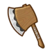
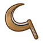
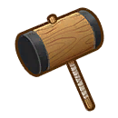
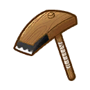
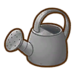
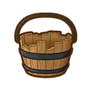
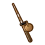
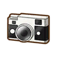
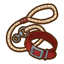

Herramientas

Al comienzo del juego, Víctor te dará una bolsa de herramientas para que uses en tu granja. Las herramientas generalmente se encuentran en la Bolsa de herramientas, de esa manera puedes administrar los espacios de tu inventario.
Hay un total de 9 herramientas que puedes usar en el juego de las cuales 5 son para la granja y las otras 4 son para otros usos, a diferencia de otros juego no iniciaras con las herramientas en su totalidad y lo conseguiras vajo ciertas circunstancia.
| Herramientas |  Hacha |
 Hoz |
 Martillo |
|---|---|---|---|
| Uso | Cortar árboles. |
Cosechar hierba. |
Puede romper rocas. |
| Obtencion | Dado el primer día. | ||
| Herramientas |  Azada |
 Regadera |
 Balde |
|---|---|---|---|
| Uso | Labrar la tierra para cultivar. |
Riega los cultivos con agua. |
Quitar el agua de los pozos o charcos de agua. |
| Obtencion | Dado el segundo día. | Dado al día siguiente del primer día de lluvia. |
|
| Herramientas |  Caña de pescar |
 Cámara |
 Correa |
|---|---|---|---|
| Uso | Regalado por Manuela tras visitar la casa de Marcos. |
Regalado por Gloria tras visitar el Museo. |
Regalado por Patricia junto a la tienda de animales después de mejorar tu hogar. |
| Obtencion | Pescar en rios y lagos. |
Tomar fotos de animales salvajes. |
Puedes pasear tus mascotas fuera de tu granja. |
Estas herramientas iniciales baratas (nivel 1) se pueden mejorar llevándolas a la forja para que puedan ser mejoradas pero para eso nesesitaras madera y lingotes como materiales para mejorarla.
Al actualizar tus herramientas, puedes romper objetos más rápido o usar acciones especiales de efecto de área cargada manteniendo presionado "Y". Con cada actualización, el daño y el área de efecto mejoran.
Lista de herramientas actualizables
Para mejorar tus herramientas, debes tener el nivel de la herramienta y los materiales adecuados como hierro, plata, oro y oricalco. Solo puedes mejorar la herramienta un nivel a la vez; por ejemplo, no puedes mejorar un hacha de hierro inmediatamente a un hacha de oricalco. Después de reunir todo lo necesario, acércate a la tienda de herramientas y Clemens mejorará tu herramienta allí mismo.
Los materiales para las mejoras de herramientas varían poco y, por lo general, requieren la misma cantidad de oro y materiales. Las mejoras más importantes requieren materiales de diferentes áreas de tu granja, así que, si quieres las mejores herramientas, ¡asegúrate de reparar esos puentes! Después de enviar uno de cada material, también puedes comprarlos en la tienda general.
Hacha
Hoz
Martillo
Azada
Regadera
Balde
Caña depescar
Otra herramientas
A diferencia de las otras herramientas estas no pueden mehorarse por lo que permaneceran de esa forma.
Cámara
"Una cámara sofisticada que puede capturar hasta el último detalle. Seguro que crearás muchos recuerdos imborrables con ella".
¡La función de cámara está de vuelta! Toma fotos de tus cosas (o personas) favoritas y compártelas con tus amigos a través de una conexión en línea. ¡Puedes subir tus propias fotos o echar un vistazo a una galería subida por otros jugadores!.
Colección de fotografía del Museo
Si tomas una fotografía de la vida silvestre de la ciudad Oliva y de tu granja, puedes donarla al Museo. Podrás ver una estatua un día después de la donación en la sala de exhibición de fotografías. También puedes comprar estas estatuas a Beth para exhibirlas en los mostradores de tu casa.
Correa
"Una correa sencilla para mascotas. ¡Pónsela a tu amigo peludo y podrás salir a pasear con él!".
La correa se puede usar para sacar a pasear a tus mascotas. Para usarla, solo tienes que seleccionar la correa en el menú de objetos y luego interactuar con tu mascota. ¡Te seguirán a donde quiera que vayas! Las mascotas se pueden comprar en la tienda de animales de La casa de las patitas después de ampliar tu casa en el Taller de Nigel.
Jugando con tu mascota
Para jugar con tu mascota, compra la Pelota para mascota o el Raton de jugete para mascota en la Tienda general. Cada juguete se puede usar solo una vez. Para usarlas, asegúrate de estar paseando con tu mascota y luego selecciona el juguete y tírala.